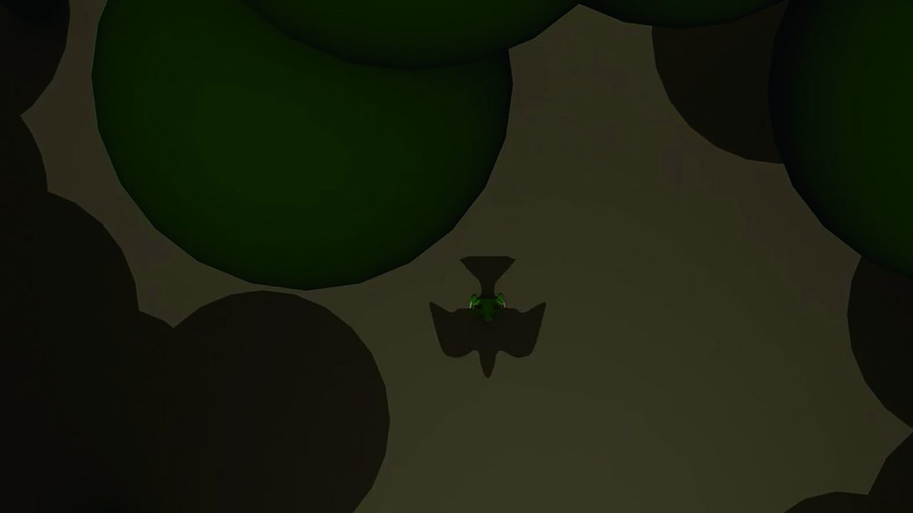

불러오는 중…
지부 권역 — 서경: 서울 · 인천 · 경기 · 강원 / 영중: 충청 · 경상 · 부산 · 울산 · 대구 · 대전 / 제전: 제주 · 전남 · 전북 · 광주. 주소·연락처는 각 기관 공식 누리집에서 확인한 값이며, 대관료가 비어 있으면 기관 공고문을 보세요. 이 목록은 data/places.csv 한 파일로 관리합니다. 열은 「지부, 시도, 유형, 이름, 주소, 대관료, 연락처, 링크, 메모, 위도, 경도」 순서이고, 유형은 전시공간 · 레지던시 · 대관공간 · 재료상 · 운송/액자 · 공공지원기관 가운데 하나를 씁니다. 대관료·연락처·위도·경도는 모르면 비워 둡니다(추측해서 적지 않습니다). 쉼표가 들어가는 칸은 큰따옴표로 감쌉니다. 위도·경도가 있는 행이 하나라도 생기면 지도가 자동으로 나타납니다.
Tell us이 장소 알려주기
아는 재료상, 액자집,
대관 공간이 있나요
지역 예술인이 실제로 쓰는 곳이 가장 좋은 자료입니다. 협회가 확인한 뒤 지도에 올립니다. 대관료는 아는 범위에서만 적어 주세요.
장소 정보를 받았습니다.
확인한 뒤 지도에 올리겠습니다. 고맙습니다.